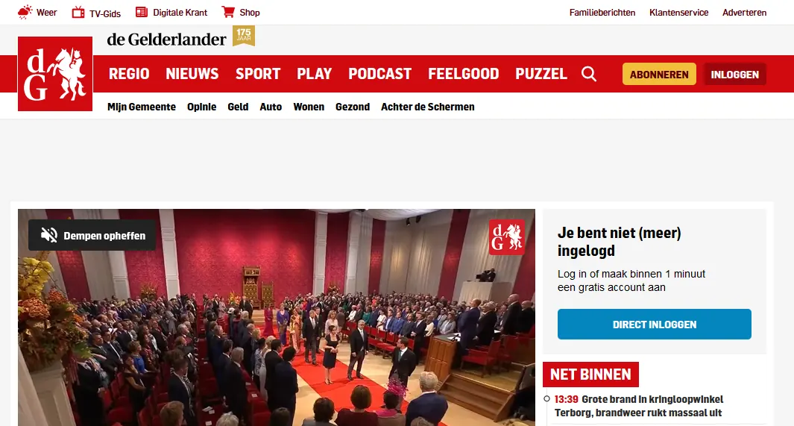
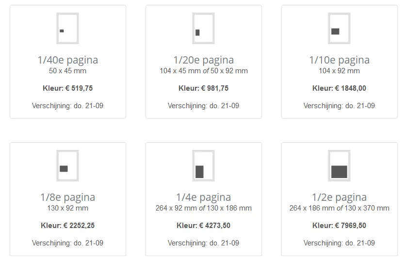
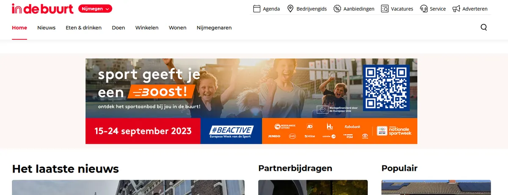
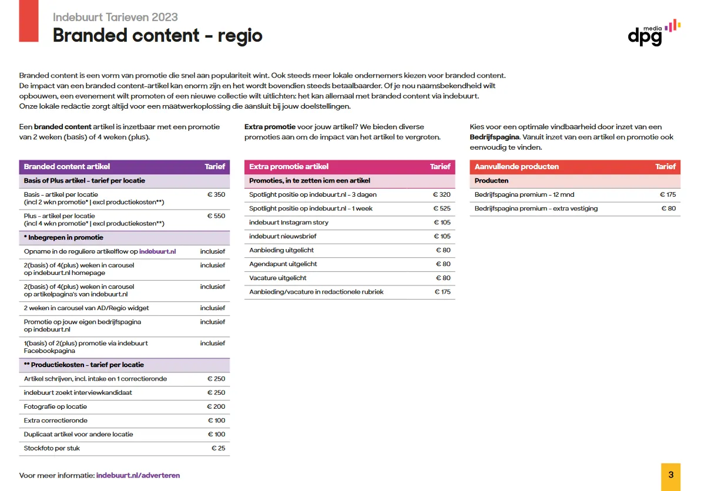

Vergelijking met andere adverteerders
Op deze pagina hebben we een overzicht gemaakt wat je betaald bij collega adverteerders in de regio en wat voor- en nadelen zijn.
Hiermee kan u in één oogopslag zien wat u betaald bij wie en kan u zodoende een goede keus maken wanneer u op zoek bent naar een partij waar u een advertentie wilt plaatsen..
Adverteren bij de Gelderlander

Bij de Gelderlander is het mogelijk om zowel offline als online een advertentie te plaatsen. Met meer dan 250.000 abonnees is de krant (offline) een zeer geschikt medium om uw bedrijf onder de aandacht te brengen. Helaas is de krant een duur medium en zal uw potentiële doelgroep uw advertentie maar eenmalig te zien krijgen. De kosten voor een eenmalige advertentie bedraagt €520 euro voor een 1/40ste pagina. Hierbij zitten nog niet de kosten voor de opmaak van de advertentie.
Het is ook mogelijk om online een advertentie af te nemen bij de Gelderlander. Hiervoor betaald u een zogezegd CPM bedrag. De afkorting CPM staat voor Cost Per Mille, ook wel Cost Per Thousand genoemd. Dit is een term die de prijs aanduidt voor duizend impressies van een advertentie op een webpagina. Het gaat hierbij dus specifiek om het aantal weergaven, interactie met de banner wordt niet gemeten.

Vergelijking NijmegenOnline en de Gelderlander
De Gelderlander is HET platform die elke Nijmegenaren kent. Met een online en offline variant kan het elk gewenste doelgroep bereiken. Nijmegen Online bereikt u de verschillende doelgroepen ook echter wel op kleinere schaal.Daar u bij de Gelderlander eenmalig of voor een korte periode onder de aandacht wordt gebracht zal u bij NijmegenOnline doorlopend onder de aandacht wordt gebracht. Doordat de Gelderlander een groot platform is zal u een veel groter advertentiebudget moeten aanspreken.
Conclusie
Wil je het bereik zo groot mogelijk hebben voor een goede prijs is ons advies om te adverteren bij NijmegenOnline. Hiermee zal uw bedrijf doorlopend onder de aandacht worden gebracht via de website en op social media. Heeft u bijvoorbeeld een (grootschalig) evenement of nieuwsitem dan is het aan te raden om ook het bereik van de Gelderlander aan te spreken met één van hun diensten. Door deze combinatie zal u op meerdere platformen zichtbaar zijn wat ten goede komt van uw zichtbaarheid.
Prijzen adverteren bij de Gelderlander
Adverteren bij Indebuurt Nijmegen

Indebuurt is hét nummer 1 lokale nieuwsplatform van Nederland. Het biedt een uniek lokaal umfeld en bereikt een brede lokale doelgroep. Inmidders actief op 34 locaties door heel Nederland. Maandelijks bereikt indebuurt.nl meer dan 6 miljoen bezoekers én het heeft een groot bereik met de social kanalen (Facebook & Instagram). Nijmegen is één van die 34 locaties en hier is het mogelijk om online een advertentie af te nemen.
Je hebt bij indebuurt verschillende advertentie opties. Als eerste kan je een bedrijfsprofiel aanmaken. Dit kost €175 per jaar. Naast je bedrijfsprofiel kan je een artikel online zetten met 2 weken promotie voor €350. Wanneer het artikel online komt zal er een bericht online komen op hun social media kanaal. Wil je het artikel laten schrijven en een foto laten maken kost dit je nog eens €450.
Een vacature online laten plaatsen kost €175 euro en heb je een agendapunt die je uitgelicht wilt zien kost dit €80.
Vergelijking NijmegenOnline en Indebuurt Nijmegen
IndeBuurt is een sterke online speler in de markt bij wie het platform bij vele inwoners uit Nijmegen bekend is. Het is niet helemaal duidelijk hoeveel bezoekers er maandelijks het Nijmegen gedeelte bezoeken.
Als we een vergelijking trekken tussen NijmegenOnline en Indebuurt zien we dat NijmegenOnline een 'all in one' pakket aanbieden en IndeBuurt een mogelijkheid aanbied waarbij je per onderdeel iets kan afnemen. Adverteren bij IndeBuurt is een stuk duurder dan bij NijmegenOnline en het is een tijdelijke promotie.
Conclusie
Wil je het bereik zo groot mogelijk hebben voor een goede prijs is ons advies om te adverteren bij NijmegenOnline. Hiermee zal uw bedrijf doorlopend onder de aandacht worden gebracht via de website en op social media. Heeft u bijvoorbeeld een (grootschalig) evenement dan is het aan te raden om ook het bereik van IndeBuurt aan te spreken met één van hun diensten. Door deze combinatie zal u op meerdere platformen zichtbaar zijn wat ten goede komt van uw zichtbaarheid.
